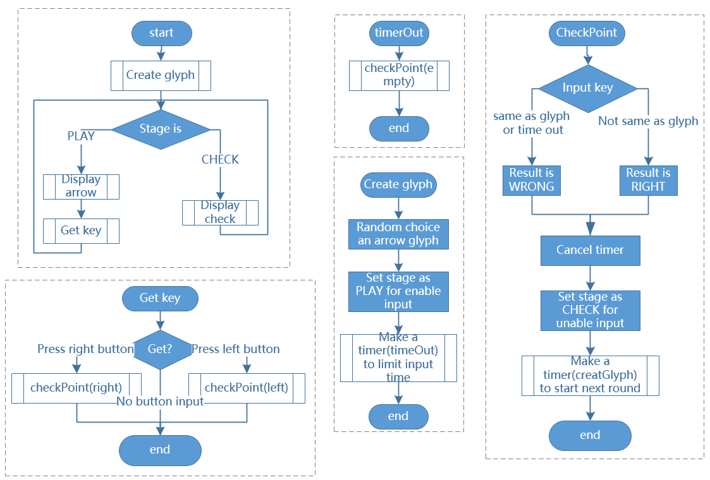

Note
Bonjour, bienvenue dans la communauté des passionnés de SunFounder Raspberry Pi & Arduino & ESP32 sur Facebook ! Plongez plus profondément dans l’univers de Raspberry Pi, Arduino et ESP32 avec d’autres passionnés.
Pourquoi nous rejoindre ?
Support d’experts : Résolvez les problèmes après-vente et les défis techniques grâce à l’aide de notre communauté et de notre équipe.
Apprendre et partager : Échangez des astuces et des tutoriels pour améliorer vos compétences.
Aperçus exclusifs : Obtenez un accès anticipé aux annonces de nouveaux produits et aux avant-premières.
Réductions spéciales : Profitez de remises exclusives sur nos derniers produits.
Promotions festives et cadeaux : Participez à des tirages au sort et à des promotions spéciales pendant les fêtes.
👉 Prêt à explorer et à créer avec nous ? Cliquez sur [Ici] et rejoignez-nous dès aujourd’hui !
3.1.14 JEU - Not Not
Introduction
Dans cette leçon, nous allons fabriquer un dispositif de jeu intéressant que nous appelons « Not Not ».
Pendant le jeu, la matrice à points rafraîchira une flèche aléatoire. Votre tâche est d’appuyer sur le bouton dans la direction opposée à la flèche dans un délai imparti. Si le temps est écoulé ou si vous appuyez sur le bouton dans la même direction que la flèche, vous perdez.
Ce jeu vous permet de pratiquer votre pensée inversée. Alors, êtes-vous prêt à essayer ?
Composants

Schéma de câblage
T-Board Name |
physical |
wiringPi |
BCM |
GPIO17 |
Pin 11 |
0 |
17 |
GPIO18 |
Pin 12 |
1 |
18 |
GPIO27 |
Pin 13 |
2 |
27 |
GPIO20 |
Pin 38 |
28 |
20 |
GPIO26 |
Pin 37 |
25 |
26 |
Procédures expérimentales
Étape 1 : Construisez le circuit.

Pour les utilisateurs du langage C
Étape 2 : Allez dans le dossier du code.
cd ~/davinci-kit-for-raspberry-pi/c/3.1.14/
Étape 3 : Compilez.
gcc 3.1.14_GAME_NotNot.c -lwiringPi
Étape 4 : Exécutez le fichier.
sudo ./a.out
Après le démarrage du programme, une flèche gauche ou droite s’affiche aléatoirement sur la matrice de points. Vous devez appuyer sur le bouton dans la direction opposée à la flèche dans un temps imparti. Ensuite, un "√" apparaîtra sur la matrice de points. Si le temps est écoulé ou si vous appuyez sur le bouton dans la même direction que la flèche, vous perdez et la matrice affiche "x". Vous pouvez également ajouter 2 nouveaux boutons ou les remplacer par des touches de joystick pour avoir 4 directions (haut, bas, gauche, droite) et augmenter la difficulté du jeu.
Note
Si le programme ne fonctionne pas après l’exécution ou si un message d’erreur apparaît : "wiringPi.h: Aucun fichier ou répertoire de ce type », veuillez consulter C code is not working?.
Explication du code
Basé sur 1.1.6 Matrice LED, cette leçon ajoute 2 boutons pour créer un dispositif de jeu amusant. Donc, si vous n’êtes pas très familier avec la matrice à points, veuillez consulter:ref:1.1.6 LED Dot Matrix.
Le processus du programme complet est le suivant :
Sélectionnez aléatoirement une direction de flèche et générez timer 1.
Affichez l’image de la flèche sur la matrice de points.
Vérifiez l’entrée du bouton. Si le bouton est pressé ou si timer 1 signale la fin du délai, commencez la vérification.
Affichez l’image selon le résultat de la vérification ; en parallèle, générez timer 2.
Reprenez étape 1 lorsque timer 2 indique la fin du délai.
struct GLYPH{
char *word;
unsigned char code[8];
};
struct GLYPH arrow[2]=
{
{"right",{0xFF,0xEF,0xDF,0x81,0xDF,0xEF,0xFF,0xFF}},
// {"down",{0xFF,0xEF,0xC7,0xAB,0xEF,0xEF,0xEF,0xFF}},
// {"up",{0xFF,0xEF,0xEF,0xEF,0xAB,0xC7,0xEF,0xFF}},
{"left",{0xFF,0xF7,0xFB,0x81,0xFB,0xF7,0xFF,0xFF}}
};
struct GLYPH check[2]=
{
{"wrong",{0xFF,0xBB,0xD7,0xEF,0xD7,0xBB,0xFF,0xFF}},
{"right",{0xFF,0xFF,0xF7,0xEB,0xDF,0xBF,0xFF,0xFF}}
};
La structure GLYPH fonctionne comme un dictionnaire : l’attribut word correspond à la clé du dictionnaire ; l’attribut code correspond à la valeur.
Ici, le code est utilisé pour stocker un tableau permettant d’afficher des images sur la matrice à points (un tableau de 8x8 bits).
Le tableau arrow peut être utilisé pour afficher les motifs de flèches dans les directions haut, bas, gauche et droite sur la matrice LED.
Maintenant, down et up sont commentés, vous pouvez les décommenter si nécessaire.
Le tableau check est utilisé pour afficher ces deux images : "×" et "√".
char *lookup(char *key,struct GLYPH *glyph,int length){
for (int i=0;i<length;i++)
{
if(strcmp(glyph[i].word,key)==0){
return glyph[i].code;
}
}
}
La fonction lookup() fonctionne comme une « consultation du dictionnaire ». Elle définit une clé, recherche les mots correspondants dans la structure GLYPH *glyph et renvoie l’information correspondante — le code du mot concerné.
La fonction Strcmp() est utilisée pour comparer deux chaînes de caractères glyph[i].word et key ; si elles sont identiques, renvoie glyph[i].code (comme illustré).
void display(char *glyphCode){
for(int i;i<8;i++){
hc595_in(glyphCode[i]);
hc595_in(0x80>>i);
hc595_out();
}
}
Affiche le motif spécifié sur la matrice à points.
void createGlyph(){
srand(time(NULL));
int i=rand()%(sizeof(arrow)/sizeof(arrow[0]));
waypoint=arrow[i].word;
stage="PLAY";
alarm(2);
}
La fonction createGlyph() sélectionne aléatoirement une direction (l’attribut word d’un élément du tableau arrow[]: "left", "right"… ). Définit le stage sur "PLAY" et démarre une alarme de 2 secondes.
srand(time(NULL)) : Initialise des graines aléatoires à partir de l’horloge du système.
(sizeof(arrow)/sizeof(arrow[0]))： Calcule la longueur du tableau, qui est 2.
rand()%2 : Le reste est 0 ou 1, obtenu en divisant un nombre aléatoire généré par 2.
waypoint=arrow[i].word : Le résultat doit être "right" ou "left".
void checkPoint(char *inputKey){
alarm(0)==0;
if(inputKey==waypoint||inputKey=="empty")
{
waypoint="wrong";
}
else{
waypoint="right";
}
stage="CHECK";
alarm(1);
}
checkPoint() vérifie l’entrée du bouton ; si le bouton n’est pas pressé ou si le bouton appuyé est dans la même direction que la flèche, le résultat de waypoint est "wrong" et un "x" apparaît sur la matrice de points. Sinon, waypoint est "right" et la matrice affiche "√". Ici, le stage est CHECK, et une alarme de 1 seconde peut être définie.
alarm() est aussi appelé « réveil », dans lequel un minuteur peut être défini, envoyant des signaux SIGALRM lorsque le temps défini est écoulé.
void getKey(){
if (digitalRead(AButtonPin)==1&&digitalRead(BButtonPin)==0)
{checkPoint("right");}
else if (digitalRead(AButtonPin)==0&&digitalRead(BButtonPin)==1)
{checkPoint("left");}
}
getKey() lit les états de ces deux boutons ; si le bouton droit est pressé, le paramètre de checkPoint() est right et si le bouton gauche est pressé, le paramètre est left.
void timer(){
if (stage=="PLAY"){
checkPoint("empty");
}
else if(stage=="CHECK"){
createGlyph();
}
}
Précédemment, timer() était appelé lorsque alarm() déclenchait la fin du temps imparti. En mode "PLAY", checkPoint() est appelé pour juger le résultat. Si le programme est en mode "CHECK", la fonction createGlyph() doit être appelée pour sélectionner de nouveaux motifs.
void main(){
setup();
signal(SIGALRM,timer);
createGlyph();
char *code = NULL;
while(1){
if (stage == "PLAY")
{
code=lookup(waypoint,arrow,sizeof(arrow)/sizeof(arrow[0]));
display(code);
getKey();
}
else if(stage == "CHECK")
{
code = lookup(waypoint,check,sizeof(check)/sizeof(check[0]));
display(code);
}
}
}
Le fonctionnement de signal(SIGALRM,timer) : appel de la fonction timer() lorsqu’un signal SIGALRM (généré par la fonction réveil alarm()) est reçu.
Lorsque le programme commence, appelez d’abord createGlyph(), puis démarrez la boucle.
Dans la boucle : en mode PLAY, la matrice de points affiche les motifs de flèches et vérifie l’état des boutons ; si en mode CHECK, ce qui est affiché est "x" ou "√".
Pour les utilisateurs du langage Python
Étape 2 : Accédez au dossier contenant le code.
cd ~/davinci-kit-for-raspberry-pi/python
Étape 3 : Exécutez le code.
sudo python3 3.1.14_GAME_NotNot.py
Après avoir lancé le programme, une flèche pointant vers la droite ou la gauche apparaîtra sur la matrice de points. Votre tâche consiste à appuyer sur le bouton dans la direction opposée à la flèche dans un délai imparti. Ensuite, un "√" s’affichera sur la matrice de points. Si le temps est écoulé ou si vous appuyez sur le bouton dans la même direction que la flèche, vous perdez et la matrice affichera un "x". Vous pouvez également ajouter 2 nouveaux boutons ou les remplacer par des touches de joystick pour avoir 4 directions (haut, bas, gauche et droite) et augmenter la difficulté du jeu.
Code
Note
Vous pouvez Modifier/Réinitialiser/Copier/Exécuter/Arrêter le code ci-dessous. Mais avant cela, vous devez accéder au chemin source du code comme davinci-kit-for-raspberry-pi/python.
import RPi.GPIO as GPIO
import time
import threading
import random
SDI = 17
RCLK = 18
SRCLK = 27
timerPlay = 0
timerCheck = 0
AButtonPin = 20
BButtonPin = 26
waypoint = "NULL"
stage = "NULL"
arrow={
#"down" :[0xFF,0xEF,0xC7,0xAB,0xEF,0xEF,0xEF,0xFF],
#"up":[0xFF,0xEF,0xEF,0xEF,0xAB,0xC7,0xEF,0xFF],
"right" : [0xFF,0xEF,0xDF,0x81,0xDF,0xEF,0xFF,0xFF],
"left":[0xFF,0xF7,0xFB,0x81,0xFB,0xF7,0xFF,0xFF]
}
check={
"wrong":[0xFF,0xBB,0xD7,0xEF,0xD7,0xBB,0xFF,0xFF],
"right":[0xFF,0xFF,0xF7,0xEB,0xDF,0xBF,0xFF,0xFF]
}
def setup():
GPIO.setmode(GPIO.BCM) # Numérotation des GPIOs par leur emplacement BCM
GPIO.setup(SDI, GPIO.OUT)
GPIO.setup(RCLK, GPIO.OUT)
GPIO.setup(SRCLK, GPIO.OUT)
GPIO.output(SDI, GPIO.LOW)
GPIO.output(RCLK, GPIO.LOW)
GPIO.output(SRCLK, GPIO.LOW)
GPIO.setup(AButtonPin,GPIO.IN)
GPIO.setup(BButtonPin,GPIO.IN)
# Transférer les données vers le 74HC595
def hc595_shift(dat):
for bit in range(0, 8):
GPIO.output(SDI, 0x80 & (dat << bit))
GPIO.output(SRCLK, GPIO.HIGH)
GPIO.output(SRCLK, GPIO.LOW)
def display(glyphCode):
for i in range(0, 8):
hc595_shift(glyphCode[i])
hc595_shift(0x80>>i)
GPIO.output(RCLK, GPIO.HIGH)
GPIO.output(RCLK, GPIO.LOW)
def creatGlyph():
global waypoint
global stage
global timerPlay
waypoint=random.choice(list(arrow.keys()))
stage = "PLAY"
timerPlay = threading.Timer(2.0, timeOut)
timerPlay.start()
def checkPoint(inputKey):
global waypoint
global stage
global timerCheck
if inputKey == "empty" or inputKey == waypoint:
waypoint = "wrong"
else:
waypoint = "right"
timerPlay.cancel()
stage = "CHECK"
timerCheck = threading.Timer(1.0, creatGlyph)
timerCheck.start()
def timeOut():
checkPoint("empty")
def getKey():
if GPIO.input(AButtonPin)==1 and GPIO.input(BButtonPin)==0:
checkPoint("right")
elif GPIO.input(AButtonPin)==0 and GPIO.input(BButtonPin)==1:
checkPoint("left")
def main():
creatGlyph()
while True:
if stage == "PLAY":
display(arrow[waypoint])
getKey()
elif stage == "CHECK":
display(check[waypoint])
def destroy():
global timer1
GPIO.cleanup()
timerPlay.cancel() # annuler le minuteur
timerCheck.cancel()
if __name__ == '__main__':
setup()
try:
main()
except KeyboardInterrupt:
destroy()
Explication du Code
Basé sur 1.1.6 Matrice de LED, cette leçon ajoute 2 boutons pour créer un dispositif de jeu amusant. Donc, si vous n’êtes pas très familier avec la matrice de points, veuillez vous référer à 1.1.6 LED Dot Matrix.
Le déroulement complet du programme est le suivant :
{kind=link}
Sélectionner aléatoirement une direction de flèche et générer le timer 1.
Afficher l’image de la flèche correspondante sur la matrice de points.
Évaluer l’entrée du bouton. Si un bouton est pressé ou si le timer 1 indique la fin du temps, le jugement commence.
Afficher l’image basée sur le résultat du jugement ; simultanément, générer le timer 2.
Reprendre à l”étape 1 lorsque le timer 2 signale la fin du temps.
def main():
creatGlyph()
while True:
if stage == "PLAY":
display(arrow[waypoint])
getKey()
elif stage == "CHECK":
display(check[waypoint])
Main() contient l’ensemble du processus de fonctionnement.
Lorsque le programme démarre, creatGlyph() est appelé une fois au début, puis la boucle démarre.
Dans la boucle : en mode PLAY, la matrice de points affiche des motifs de flèches et vérifie l’état des boutons ; en mode CHECK, ce qui est affiché est soit "x" soit "√".
arrow={
#"down" :[0xFF,0xEF,0xC7,0xAB,0xEF,0xEF,0xEF,0xFF],
#"up":[0xFF,0xEF,0xEF,0xEF,0xAB,0xC7,0xEF,0xFF],
"right" : [0xFF,0xEF,0xDF,0x81,0xDF,0xEF,0xFF,0xFF],
"left":[0xFF,0xF7,0xFB,0x81,0xFB,0xF7,0xFF,0xFF]
}
check={
"wrong":[0xFF,0xBB,0xD7,0xEF,0xD7,0xBB,0xFF,0xFF],
"right":[0xFF,0xFF,0xF7,0xEB,0xDF,0xBF,0xFF,0xFF]
}
Ici, le dictionnaire arrow permet d’afficher les motifs de flèches dans les directions haut, bas, gauche et droite sur la matrice de LED.
Actuellement, les flèches haut et bas sont commentées, et vous pouvez les décommenter si nécessaire.
Le dictionnaire check est utilisé pour afficher les deux images : "×" et "√".
def display(glyphCode):
for i in range(0, 8):
hc595_shift(glyphCode[i])
hc595_shift(0x80>>i)
GPIO.output(RCLK, GPIO.HIGH)
GPIO.output(RCLK, GPIO.LOW)
Afficher le motif spécifié sur la matrice de points.
def creatGlyph():
global waypoint
global stage
global timerPlay
waypoint=random.choice(list(arrow.keys()))
stage = "PLAY"
timerPlay = threading.Timer(2.0, timeOut)
timerPlay.start()
La fonction createGlyph() est utilisée pour sélectionner aléatoirement une direction (l’attribut mot d’un élément dans le tableau arrow[] : "left", "right"… ). Définir l’étape en "PLAY" et démarrer une fonction d’alarme de 2 secondes.
arrow.keys(): Sélectionne les clés "right" et "left" dans le tableau arrow.
list(arrow.keys()): Combine ces clés en un tableau.
random.choice(list(arrow.keys())): Sélectionne aléatoirement un élément du tableau.
Ainsi, le résultat de waypoint=random.choice(list(arrow.keys())) devrait être "right" ou "left".
def checkPoint(inputKey):
global waypoint
global stage
global timerCheck
if inputKey == "empty" or inputKey == waypoint:
waypoint = "wrong"
else:
waypoint = "right"
timerPlay.cancel()
stage = "CHECK"
timerCheck = threading.Timer(1.0, creatGlyph)
timerCheck.start()
checkPoint() est utilisé pour détecter l’état actuel de l’entrée du bouton :
Si aucun bouton n’est pressé ou si le bouton dans la même direction que la flèche
est pressé, la valeur assignée au ``waypoint`` est ``wrong`` et un x
s’affiche sur la matrice de points.
Sinon, le waypoint est correct et "√" apparaît.
Maintenant, l’étape est CHECK et un minuteur de 1 seconde timerCheck est démarré pour appeler la fonction creatGlyph() dans une seconde.
def timeOut():
checkPoint("empty")
Dans la fonction timeout(), le paramètre de checkPoint() est défini sur "empty".
def getKey():
if GPIO.input(AButtonPin)==1 and GPIO.input(BButtonPin)==0:
checkPoint("right")
elif GPIO.input(AButtonPin)==0 and GPIO.input(BButtonPin)==1:
checkPoint("left")
getKey() lit l’état de ces deux boutons, et si le bouton droit est pressé, le paramètre de checkPoint() est right ; si le bouton gauche est pressé, le paramètre est left.